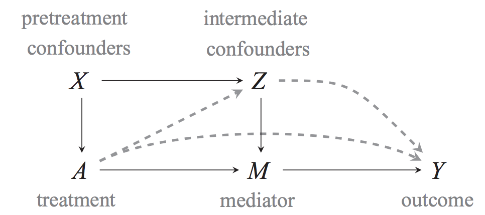
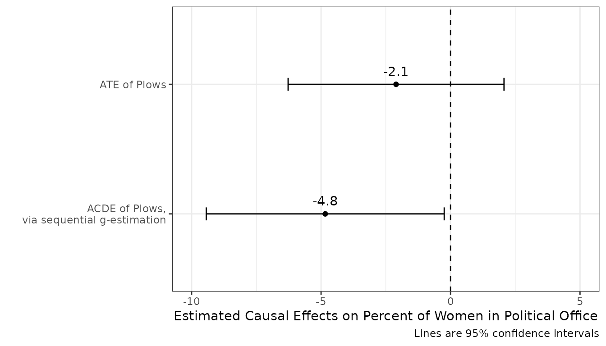
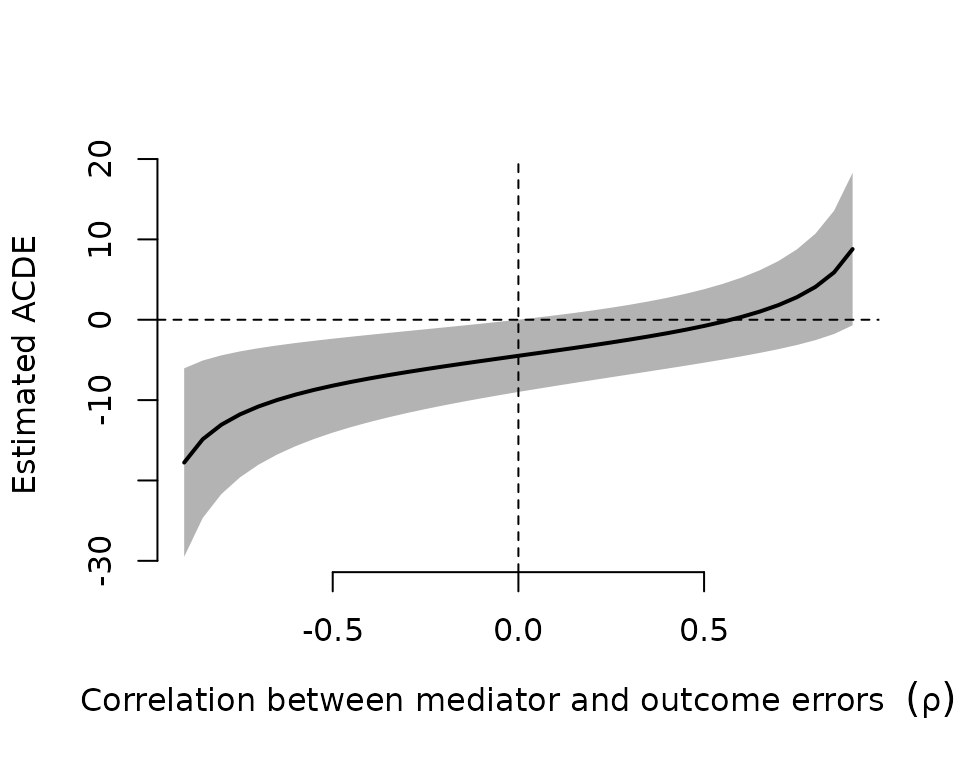

Estimating controlled direct effects
2022-03-21
Source:vignettes/DirectEffects.Rmd
DirectEffects.RmdThis vignette demonstrates how to estimate the controlled direct effect of some treatment, net the effect of some mediator using sequential g-estimation approach as described by Acharya, Blackwell, and Sen (2016). With standard regression and matching approaches, estimating the controlled direct effect is difficult because it often requires adjusting for covariates that causally affect the mediator and are causally affected by the treatment. Including such variables in a regression model can lead to post-treatment bias when estimating the direct effect of treatment. A large class of models and estimation approaches have been developed to avoid this problem, but here we focus on one called sequential g-estimation. This approach uses a standard linear model to estimate the effect of the mediator, and then removes that effect from effect from the dependent variable to estimate the direct effect of treatment without post-treatment bias.
Quantity of interest
Here we briefly introduce some of the statistical theory behind estimating direct effects. The main quantity of interest is the average controlled direct effect or ACDE. This can be illustrated from the following causal structure (Acharya, Blackwell, and Sen 2016, Figure 3):

The average controlled direct effect defined for a given treatment (\(A_i = a\) vs. \(A_i = a^\prime\)) and a given value of the mediator (\(M_i = m\)) is \[ACDE(a, a^\prime, m) = E[Y_i(a, m) - Y_i(a^\prime, m)]\] and is the total of the dashed lines in the figure above. Thus, we hold the mediator constant when comparing the outcome under each treatment. The ACDE is useful for discriminating between causal mechanisms, because the average total effect of treatment, \(\tau(a, a^\prime) \equiv E[(Y_i(a) - Y_i(a^\prime)]\), can be decomposed as the sum of three quantities: (1) the ACDE, (2) the average natural indirect effect, and (3) a reference interaction that measures of how much the direct effect of \(A_i\) depends on a particular \(M_i = m\). Thus, if the ACDE is non-zero, it is evidence that the effect of \(A_i\) is not entirely explained by \(M_i\). We illustrate this with an empirical example. For more information on this, see Acharya, Blackwell, and Sen (2016).
Estimation by sequential g-estimation
One way to estimate the ACDE with linear models is by sequential g-estimation, a type of structural nested mean model. The key logic of sequential g-estimation is that, under the sequential unconfoundedness assumption, the ACDE can be identified as follows: \[E[Y_i(a, 0) - Y_i(0,0)|X_i = x] = E[Y_i - \gamma(a, M_i, x) | A_i = a, x] - E[Y_i - \gamma(0, M_i, x) | A_i = 0, x]\]
The function \(\gamma\) above is called the “demediation function” (or “blip-down function”) and is defined as follows: \[\gamma(a, m, x) = E[Y_i(a, m) - Y_i(a, 0) | X_i = x]\]
This function is the effect of switching from some level of the mediator to 0, and thus is an estimate of the causal effect of the mediator for a fixed value of the treatment \(a\) and within levels of the covariates. Subtracting its estimates \(\gamma(A_i, M_i, X_i)\) from the outcome \(Y_i\) will effectively remove the variation due to the mediator from the outcome, or what Acharya, Blackwell, and Sen (2016) call “demediation.”
The identification of the ACDE hold under the sequential unconfoundedness condition, using the definitions by Acharya, Blackwell, and Sen (2016).
Assumption 1 (Sequential Unconfoundedness)
First, no omitted variables for the effect of treatment (\(A_i\)) on the outcome (\(Y_i\)), conditional on the pretreatment confounders (\(X_i\)). Second, no omitted variables for the effect of the mediator on the outcome, conditional on the treatment, pretreatment confounders, and intermediate confounders (\(Z_i\)).
While the ACDE is estimated nonparametrically with just this assumption, we need to make a further assumption to be able to use sequential g-estimation.
Assumption 2 (No intermediate interactions)
The effect of the mediator (\(M_i\)) on the outcome (\(Y_i\)) is independent of the intermediate confounders (\(Z_i\)).
Without this assumption, we would have to model the multivariate distribution of the intermediate confounders in order to estimate the ACDE.
Estimating the demediation function
Under the assumption of sequential unconcoundedness, the demediation function can be estimated by a regression of the outcome on the variables in the demediation function (\(M_i\)) plus the intermediate confounders (\(Z_i\)), treatment (\(A_i\)), and baseline confounders (\(X_i\)). If this regression model is correctly specified, the coefficients on the variables in the demediation function are unbiased for the parameters of the demediation function. For example, when there are no interactions between the mediator and the treatment, nor between the mediator and the pretreatment confounders, the demediation function is straightforward to estimate. In this case, the demediation function is \(\gamma(a, m, x) = \alpha \times m\) and the OLS coefficient on the mediator is an the estimate of \(\alpha\).
Using the demediation function to estimate ACDE
The second stage of sequential g-estimation uses the demediated outcome \[\tilde{Y}_i = Y_i - \widehat{\gamma}(A_i, M_i, X_i; \widehat{\alpha}).\] If there are no interactions or nonlinearities in the demediation function, then this becomes \(\tilde{Y}_i = Y_i - \widehat{\alpha}M_i\). With this demediated outcome in hand, we can estimate the ACDE by regressing this outcome on the treatment and pre-treatment covariates: \[E[\tilde{Y}_i | A_i, X_i] = \beta_0 + \beta_1A_i + X_i^T\beta_2.\] Under the above assumptions and assuming this regression is correctly specified, the \(\widehat{\beta}_1\) is an unbiased estimate of the ACDE. The sequential_g function that we demonstrate below will complete both the estimation of the demediation function and the estimation of the ACDE. For more technical details on sequential g-estimation, see Acharya, Blackwell, and Sen (2016).
Illustrative example of sequential g-estimation
We now work through one example of using sequential_g to estimate the ACDE. The data comes from Alesina, Giuliano, and Nunn (2013). The dataset comes with the package:
data(ploughs)The paper’s main argument is that the advent of the capital-intensive agricultural practice of the plow favored men over women participating in agriculture, which have affected gender inequality in modern societies. These authors find that strong effects of plow-based agriculture on female labor-force participation, but not on share of political positions held by women. The authors speculate that this might be due to the (positive) effects of the plow on modern-day income levels, which could offset the direct effects of the plow. The authors control for income and show that a significant effect of the plow appears. We evaluate this approach and try to estimate the ACDE more formally. Thus, in this case, we have the following variables, where \(i\) indexes countries:
-
\(Y_i\) is the share of political positions held by women in 2000 (
women_politics) -
\(A_i\) is the relative proportion of ethnic groups that traditionally used the plow within a country (
plow) -
\(M_i\) is the log GDP per capita in 2000, mean-centered (
centered_ln_inc) -
\(Z_i\) are the post-treatment, pre-mediator intermediate confounders (
years_civil_conflict,years_interstate_conflict,oil_pc,european_descent,communist_dummy,polity2_2000,serv_va_gdp2000) -
\(X_i\) is the pre-treatment characteristics of the country, which are mostly geographic. (
tropical_climate,agricultural_suitability,large_animals,political_hierarchies,economic_complexity, andrugged)
As a baseline, we first regress \(Y_i\) on \(A_i\) controlling for the pre-treatment variables \(X_i\).
ate.mod <- lm(women_politics ~ plow + agricultural_suitability +
tropical_climate + large_animals + political_hierarchies +
economic_complexity + rugged, data = ploughs)Notice that the effect of the plow is negative and insignificant.
summary(ate.mod)##
## Call:
## lm(formula = women_politics ~ plow + agricultural_suitability +
## tropical_climate + large_animals + political_hierarchies +
## economic_complexity + rugged, data = ploughs)
##
## Residuals:
## Min 1Q Median 3Q Max
## -15.060 -5.292 -2.000 3.752 25.923
##
## Coefficients:
## Estimate Std. Error t value Pr(>|t|)
## (Intercept) 17.5604 4.9038 3.581 0.000466 ***
## plow -2.1032 2.1270 -0.989 0.324422
## agricultural_suitability 0.9712 2.5761 0.377 0.706721
## tropical_climate -7.5137 1.9621 -3.830 0.000191 ***
## large_animals -8.7104 4.0510 -2.150 0.033201 *
## political_hierarchies 0.9359 0.9722 0.963 0.337344
## economic_complexity 1.0284 0.5430 1.894 0.060202 .
## rugged -0.6370 0.4961 -1.284 0.201137
## ---
## Signif. codes: 0 '***' 0.001 '**' 0.01 '*' 0.05 '.' 0.1 ' ' 1
##
## Residual standard error: 8.372 on 145 degrees of freedom
## (81 observations deleted due to missingness)
## Multiple R-squared: 0.1831, Adjusted R-squared: 0.1436
## F-statistic: 4.642 on 7 and 145 DF, p-value: 0.0001028Implementation
In this example, we would like to estimate the controlled direct effect of plows fixing the value of the mediator, current national income. To do so, we must choose a value at which to fix this mediator. The standard sequential g-estimation approach will fix the value to 0, which is often not a substantively interesting value—it certainly is not for income or logged income. To avoid this problem, we use the mean-centered version of our logged income, centered_ln_inc, so that when we demediate with \(m = 0\), it will be equivalent to demediation with \(m\) set to the mean of logged national income. Furthermore, we also use a squared term of this centered mediator, centered_ln_incsq, so that we can include it in the demediation function to account for nonlinear effects of logged income.
Next, we specify the main formula that contains a left-hand side that specifies the dependent variable, and a right-hand side that distinguishes between the baseline variables, the intermediate variables, and the variables in the demediation function. Each of these sets of variables on the left-hand side is separated by the vertical bar |. Thus, the formula will have the form yvar ~ treat + xvars | zvars | mvars. . For example, here we specify that the demediation variables are \(M_i\) and \(M_i^2\):
form_main <- women_politics ~ plow + agricultural_suitability + tropical_climate +
large_animals + political_hierarchies + economic_complexity + rugged |
years_civil_conflict + years_interstate_conflict + oil_pc + european_descent +
communist_dummy + polity2_2000 + serv_va_gdp2000 |
centered_ln_inc + centered_ln_incsqsequential_g(), implements sequential g-estimation in the way outlined in the previous section. Specifically, it runs the first stage model, constructs the demediator function, and passes it to the second-stage model. At its simplest, it takes in the formula and a data frame:
direct <- sequential_g(form_main, data = ploughs)Output
As usual, we can use the summary function to the output of the sequential_g function:
summary(direct)##
## t test of coefficients:
##
## Estimate Std. Err. t value Pr(>|t|)
## (Intercept) 12.18450 3.64442 3.3433 0.001121 **
## plow -4.83879 2.34467 -2.0637 0.041312 *
## agricultural_suitability 4.57388 3.10477 1.4732 0.143458
## tropical_climate -2.18919 2.10505 -1.0400 0.300554
## large_animals -1.33001 3.40008 -0.3912 0.696401
## political_hierarchies 0.49575 1.09060 0.4546 0.650283
## economic_complexity -0.10521 0.42973 -0.2448 0.807029
## rugged -0.30869 0.47821 -0.6455 0.519888
## ---
## Signif. codes: 0 '***' 0.001 '**' 0.01 '*' 0.05 '.' 0.1 ' ' 1The standard errors here are based on the asymptotic variance derived in Acharya, Blackwell, and Sen (2016), but it is also possible to use the boots_g function to compute standard errors by a simple bootstrap:
##
## Summary of bootstrapped coefficients:
##
## Estimate Std. Err. t value 2.5 % 97.5 %
## (Intercept) 12.74970 4.22744 3.01594 4.69697 20.4137
## plow -5.17860 2.65334 -1.95172 -10.96257 -0.6424
## agricultural_suitability 4.17303 3.29419 1.26678 -2.54929 10.4864
## tropical_climate -2.21295 2.19620 -1.00763 -6.39473 1.9184
## large_animals -1.54537 4.69380 -0.32924 -10.87825 6.6696
## political_hierarchies 0.60609 1.12539 0.53856 -1.39564 2.8665
## economic_complexity -0.16190 0.54897 -0.29491 -1.38089 0.9106
## rugged -0.27959 0.55963 -0.49959 -1.33982 0.9680The coefficient on the treatment variable (here, plow), is the estimate of the ACDE. The results show a negative ACDE of plows—in other words, the effect of the plough is negative for fixed income levels. This controlled direct effect is larger in magnitude than the estimated the total effect:

Output attributes
There are various quantities and output objects available from the sequential_g function. As usual, the coefficient estimates from the second stage can be accessed using the coef() function:
coef(direct)## (Intercept) plow agricultural_suitability
## 12.1845047 -4.8387928 4.5738843
## tropical_climate large_animals political_hierarchies
## -2.1891894 -1.3300131 0.4957518
## economic_complexity rugged
## -0.1052101 -0.3086924One can access confidence intervals for the coefficients using the usual confint function:
confint(direct, "plow")## 2.5 % 97.5 %
## plow -9.434262 -0.2433234The vcov() function returns the variance covariance-matrix that accounts for the first stage estimation,
vcov(direct)[1:3, 1:3]## (Intercept) plow agricultural_suitability
## (Intercept) 13.2818030 -0.5383896 0.1744604
## plow -0.5383896 5.4974789 1.2047839
## agricultural_suitability 0.1744604 1.2047839 9.6395922Sensitivity
The cdesens function can perform a sensitivity analysis to evaluate how the estimated ACDE changes for various levels of post-treatment confounding of the mediator-outcome relationship. Currently, this function only supports a model with only one mediator.
# update with only one mediator
direct1 <- sequential_g(women_politics ~ plow + agricultural_suitability + tropical_climate +
large_animals + political_hierarchies + economic_complexity + rugged |
years_civil_conflict + years_interstate_conflict + oil_pc + european_descent +
communist_dummy + polity2_2000 + serv_va_gdp2000 |
centered_ln_inc,
ploughs)
out_sens <- cdesens(direct1, var = "plow")
plot(out_sens)
The black line shows how the estimated ACDE would be at various levels of correlation between the mediator and outcome errors, while the gray bands show the 95% confidence intervals. Note that when this correlation is 0, we recover the estimated effect from sequential_g. See Acharya, Blackwell, and Sen (2016) for more information.
References
Acharya, Avidit, Matthew Blackwell, and Maya Sen. 2016. “Explaining Causal Findings Without Bias: Detecting and Assessing Direct Effects.” American Political Science Review 110 (3): 512–29. https://doi.org/10.1017/S0003055416000216.
Alesina, Alberto, Paola Giuliano, and Nathan Nunn. 2013. “On the Origins of Gender Roles: Women and the Plough.” Quarterly Journal of Economics 128 (2): 469–530. https://doi.org/10.1093/qje/qjt005.